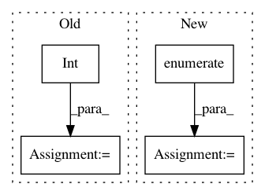

64a2763f3e0ff21c6de3bbbe6cbddab1857fc080,cyclegan/cyclegan.py,CycleGAN,train,#CycleGAN#,157
Before Change
def train(self, epochs, batch_size=128, sample_interval=50):
half_batch = int(batch_size / 2)
start_time = datetime.datetime.now()
for epoch in range(epochs):
// ----------------------
// Train Discriminators
// ----------------------
imgs_A = self.data_loader.load_data(domain="A", batch_size=half_batch)
imgs_B = self.data_loader.load_data(domain="B", batch_size=half_batch)
// Translate images to opposite domain
fake_B = self.g_AB.predict(imgs_A)
fake_A = self.g_BA.predict(imgs_B)
After Change
start_time = datetime.datetime.now()
for epoch in range(epochs):
for batch_i, (imgs_A, imgs_B) in enumerate(self.data_loader.load_batch(batch_size)):
// ----------------------
// Train Discriminators
// ----------------------
// Translate images to opposite domain
fake_B = self.g_AB.predict(imgs_A)
fake_A = self.g_BA.predict(imgs_B)
valid = np.ones((batch_size,) + self.disc_patch)
fake = np.zeros((batch_size,) + self.disc_patch)
// Train the discriminators (original images = real / translated = Fake)
dA_loss_real = self.d_A.train_on_batch(imgs_A, valid)
dA_loss_fake = self.d_A.train_on_batch(fake_A, fake)
dA_loss = 0.5 * np.add(dA_loss_real, dA_loss_fake)
dB_loss_real = self.d_B.train_on_batch(imgs_B, valid)
dB_loss_fake = self.d_B.train_on_batch(fake_B, fake)
dB_loss = 0.5 * np.add(dB_loss_real, dB_loss_fake)
// Total disciminator loss
d_loss = 0.5 * np.add(dA_loss, dB_loss)
// ------------------
// Train Generators
// ------------------
// The generators want the discriminators to label the translated images as real
valid = np.ones((batch_size,) + self.disc_patch)
// Train the generators
g_loss = self.combined.train_on_batch([imgs_A, imgs_B], [valid, valid, imgs_A, imgs_B, imgs_A, imgs_B])
elapsed_time = datetime.datetime.now() - start_time
// Plot the progress
print ("[Epoch %d/%d] [Batch %d/%d] time: %s [D loss: %f, acc: %3d%%] [G loss: %05f, adv: %05f, recon: %05f, id: %05f]" \
% ( epoch, epochs,
batch_i, self.data_loader.n_batches,
elapsed_time,
d_loss[0], 100*d_loss[1],
g_loss[0],
np.mean(g_loss[1:3]),
np.mean(g_loss[3:5]),
np.mean(g_loss[5:6])))
// If at save interval => save generated image samples
if batch_i % sample_interval == 0:
self.sample_images(epoch, batch_i)
def sample_images(self, epoch, batch_i):
os.makedirs("%s" % self.dataset_name, exist_ok=True)
r, c = 2, 3
In pattern: SUPERPATTERN
Frequency: 3
Non-data size: 4
Instances
Project Name: eriklindernoren/Keras-GAN
Commit Name: 64a2763f3e0ff21c6de3bbbe6cbddab1857fc080
Time: 2018-04-16
Author: eriklindernoren@gmail.com
File Name: cyclegan/cyclegan.py
Class Name: CycleGAN
Method Name: train
Project Name: vitchyr/rlkit
Commit Name: 9bdbb11cf27060e7847a87dcdf691dd6b96ce6df
Time: 2020-08-09
Author: 38036768+YangRui2015@users.noreply.github.com
File Name: rlkit/data_management/obs_dict_replay_buffer.py
Class Name: ObsDictRelabelingBuffer
Method Name: random_batch
Project Name: eriklindernoren/Keras-GAN
Commit Name: d444fdae4b30d35f3cfba98c9fa9e3169cc2cf69
Time: 2018-03-15
Author: eriklindernoren@gmail.com
File Name: discogan/discogan.py
Class Name: DiscoGAN
Method Name: train